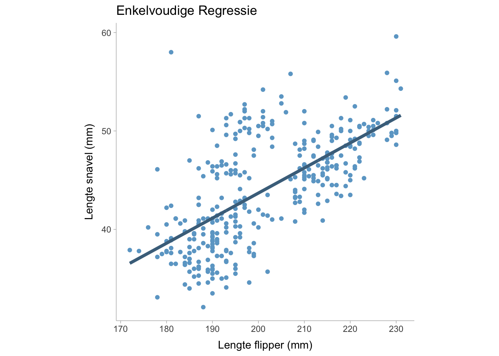
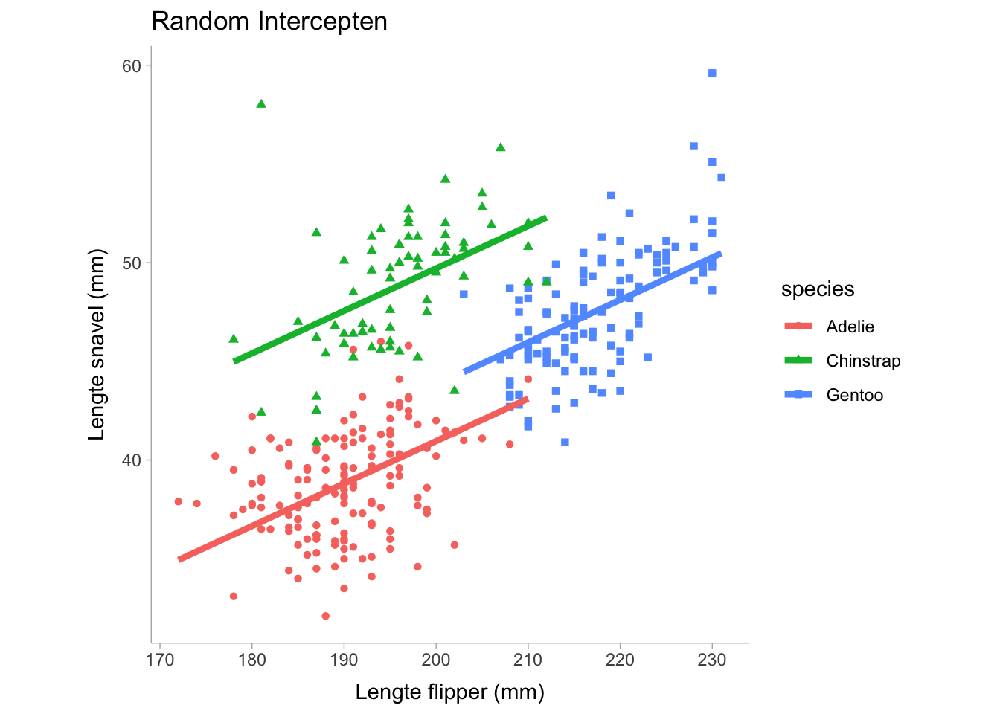
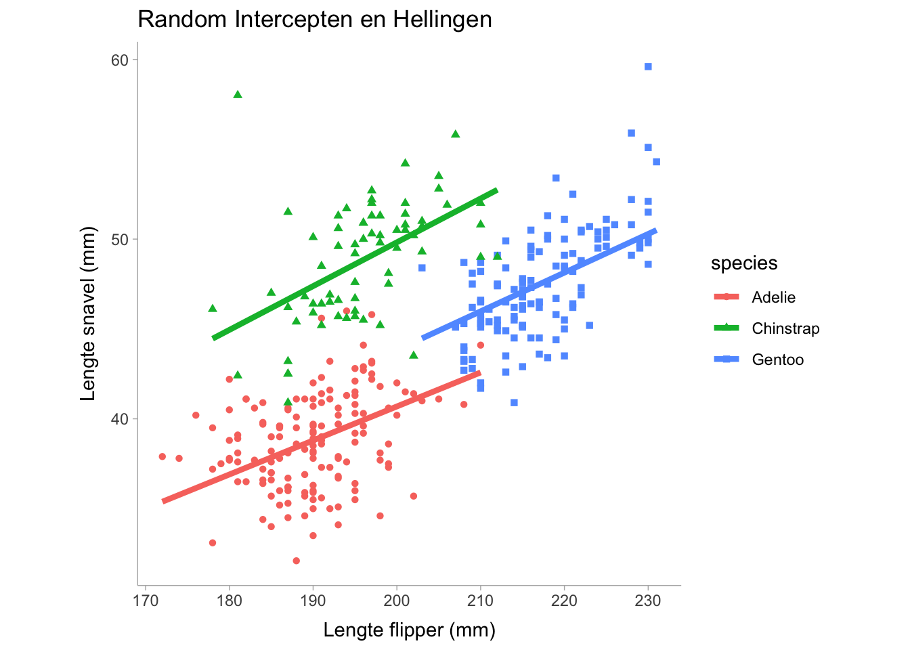

13 Regressie
Keywords
samenwerken, betrouwbaarheidsinterval, effect size, open onderwijsbron, open studiebeurs, open wetenschap
Regressie is een methode om een uitkomstvariabele te voorspellen op basis van een of meer voorspellende variabelen.
13.1 Regressie Overzicht
In een enkelvoudige lineaire regressie is er slechts één voorspeller (\(x\)) en één uitkomst (\(y\)) in het regressiemodel,
\[ y = b_0 + b_1 x + e \]
We kunnen dit model visualiseren door gegevens uit het palmerpinguïn-datapakket te tonen:
waarbij \(b_0\) de interceptcoëfficiënt is, \(b_1\) de hellingscoëfficiënt en \(e\) de foutterm die normaal verdeeld is met een gemiddelde van nul en een variantie van \(sigma^2\). Voor een enkelvoudige lineaire regressie kunnen we een niet-gestandaardiseerde regressiecoëfficiënt verkrijgen door de optimale waarde van \(b_0\) en \(b_1\) te vinden die de variantie in \(e\), namelijk \(\sigma^2\), minimaliseert. In een meervoudige regressie kunnen we \(y\) modelleren als een functie van meerdere voorspellende variabelen zodat,
\[ y = b_0 + b_1 x_{1} + b_2 x_{2} +... + e \] Waarbij de coëfficiënten allemaal samen worden geoptimaliseerd om de foutvariantie te minimaliseren. De lijn van de regressievergelijking is onze voorspelde waarde van \(y_i\), maar kan ook worden geïnterpreteerd als het gemiddelde van \(y\) gegeven een bepaalde waarde van \(x\). In een regressievergelijking kunnen we complexere modellen maken met niet-lineaire termen zoals interacties of polynomen (of eender welke functie van \(x\)). We kunnen bijvoorbeeld een model maken met een hoofdeffect, \(x_1\), een kwadratische polynomiale term, \(x^2_1\) en een interactieterm, \(x_1 x_2\),
\[ y_i = b_0 + b_1 x_{1} + b_2 x^2_{2} + b_2 x_{1} x_{2} + e_i \]
13.2 Effect Sizes voor een Lineaire Regressie
Als we de variantie in de uitkomst willen berekenen die door alle voorspellende variabelen wordt verklaard, kunnen we een \(R^2\)-waarde berekenen. De \(R^2\)-waarde kan op twee manieren worden geïnterpreteerd:
- de variantie in \(y\) verklaard door de voorspellende variabelen
- het kwadraat van de correlatie tussen voorspelde \(y\) waarden en waargenomen (werkelijke) \(y\) waarden.
Op dezelfde manier kunnen we ook de vierkantswortel van \(R^2\) nemen om de correlatie tussen voorspelde en waargenomen \(y\) waarden te krijgen. We kunnen vrij eenvoudig een lineair regressiemodel construeren in basis-R met de functie lm(). We zullen de palmerpenguins dataset gebruiken voor ons voorbeeld.
library(palmerpenguins)
mdl <- lm(bill_length_mm ~ flipper_length_mm + bill_depth_mm,
data = penguins)
summary(mdl)
Call:
lm(formula = bill_length_mm ~ flipper_length_mm + bill_depth_mm,
data = penguins)
Residuals:
Min 1Q Median 3Q Max
-10.8831 -2.7734 -0.3268 2.3128 19.7630
Coefficients:
Estimate Std. Error t value Pr(>|t|)
(Intercept) -28.14701 5.51435 -5.104 5.54e-07 ***
flipper_length_mm 0.30569 0.01902 16.073 < 2e-16 ***
bill_depth_mm 0.62103 0.13543 4.586 6.38e-06 ***
---
Signif. codes: 0 '***' 0.001 '**' 0.01 '*' 0.05 '.' 0.1 ' ' 1
Residual standard error: 4.009 on 339 degrees of freedom
(2 observations deleted due to missingness)
Multiple R-squared: 0.4638, Adjusted R-squared: 0.4607
F-statistic: 146.6 on 2 and 339 DF, p-value: < 2.2e-16We zullen zien dat het lineaire regressieoverzicht twee \(R^2\) waarden geeft. De eerste is de traditionele \(R^2\) en de andere is de aangepaste \(R^2\). De aangepaste \(R^2_text{adj}\) past een correctiefactor toe omdat \(R^2\) vaak een vertekend beeld geeft als er meer voorspellende variabelen en een kleinere steekproefomvang zijn. Als we de bijdrage van elke term in het regressiemodel willen weten, kunnen we ook semi-partiële \(sr^2\) waarden gebruiken die vergelijkbaar zijn met partiële eta kwadraten in het ANOVA gedeelte van dit boek. In R kunnen we \(sr^2\) berekenen met de functie r2_semipartial() in het pakket effectsize (Ben-Shachar, Lüdecke, and Makowski 2020):
library(effectsize)
r2_semipartial(mdl,alternative = "two.sided")Term | sr2 | 95% CI
---------------------------------------
flipper_length_mm | 0.41 | [0.33, 0.49]
bill_depth_mm | 0.03 | [0.01, 0.06]Een gestandaardiseerde effectgrootte voor elke term kan ook worden berekend door de regressiecoëfficiënten te standaardiseren. Gestandaardiseerde regressiecoëfficiënten worden berekend door de schaal van de voorspellende en de uitkomstvariabelen te veranderen in z-scores (d.w.z. het gemiddelde en de variantie op respectievelijk nul en één te zetten).
stand_mdl <- lm(scale(bill_length_mm) ~ scale(flipper_length_mm) + scale(bill_depth_mm),
data = penguins)
summary(stand_mdl)
Call:
lm(formula = scale(bill_length_mm) ~ scale(flipper_length_mm) +
scale(bill_depth_mm), data = penguins)
Residuals:
Min 1Q Median 3Q Max
-1.9934 -0.5080 -0.0599 0.4236 3.6199
Coefficients:
Estimate Std. Error t value Pr(>|t|)
(Intercept) 2.898e-16 3.971e-02 0.000 1
scale(flipper_length_mm) 7.873e-01 4.899e-02 16.073 < 2e-16 ***
scale(bill_depth_mm) 2.246e-01 4.899e-02 4.586 6.38e-06 ***
---
Signif. codes: 0 '***' 0.001 '**' 0.01 '*' 0.05 '.' 0.1 ' ' 1
Residual standard error: 0.7344 on 339 degrees of freedom
(2 observations deleted due to missingness)
Multiple R-squared: 0.4638, Adjusted R-squared: 0.4607
F-statistic: 146.6 on 2 and 339 DF, p-value: < 2.2e-16Als alternatief kunnen we de standardise functie gebruiken in het effectsize pakket:
standardise(mdl)
Call:
lm(formula = bill_length_mm ~ flipper_length_mm + bill_depth_mm,
data = data_std)
Coefficients:
(Intercept) flipper_length_mm bill_depth_mm
2.898e-16 7.873e-01 2.246e-01 13.3 Pearson correlatie vs regressiecoëfficiënten in eenvoudige lineaire regressies
Een hellingscoëfficiënt in een enkelvoudig lineair regressiemodel kan worden gedefinieerd als de covariantie tussen voorspeller \(x\) en uitkomst \(y\) gedeeld door de variantie in \(x\),
\[ b_1 = \frac{\text{Cov}(x,y)}{S_x^2} \]
Waarbij \(S_x\) de standaardafwijking van \(x\) is (het kwadraat van de standaardafwijking is de variantie). Een Pearson correlatie is gedefinieerd als,
\[ r = \frac{\text{Cov}(x,y)}{S_xS_y} \]
We zien dat deze formules erg op elkaar lijken, in feite kunnen we \(r\) uitdrukken als een functie van \(b_1\) zodat,
\[ r = b_1 \frac{S_x}{S_y} \]
Dat betekent dat als \(S_x=S_y\) dan is \(r = b_1\). Bovendien, als de regressiecoëfficiënt gestandaardiseerd is, zouden de uitkomst- en voorspellingsvariabele beide een variantie van 1 hebben, waardoor \(S_x=S_y = 1\). Daarom is een gestandaardiseerde regressiecoëfficiënt gelijk aan een Pearson correlatie.
13.4 Multi-Level Regressie modellen
We kunnen de regressiecoëfficiënten zoals het intercept en de helling willekeurig laten variëren met betrekking tot een of andere groeperingsvariabele. Stel bijvoorbeeld dat we denken dat het intercept zal variëren tussen de verschillende soorten pinguïns als we kijken naar de relatie tussen lichaamsmassa en snavellengte. Met behulp van het lme4 pakket in R kunnen we een model construeren dat de interceptcoëfficiënt laat variëren tussen soorten.
library(palmerpenguins)
library(lme4)
ml_mdl <- lmer(bill_length_mm ~ 1 + flipper_length_mm + (1 | species),
data = penguins)
summary(ml_mdl)Linear mixed model fit by REML ['lmerMod']
Formula: bill_length_mm ~ 1 + flipper_length_mm + (1 | species)
Data: penguins
REML criterion at convergence: 1640.6
Scaled residuals:
Min 1Q Median 3Q Max
-2.5568 -0.6666 0.0109 0.7020 4.7678
Random effects:
Groups Name Variance Std.Dev.
species (Intercept) 20.06 4.479
Residual 6.74 2.596
Number of obs: 342, groups: species, 3
Fixed effects:
Estimate Std. Error t value
(Intercept) 1.81165 4.97514 0.364
flipper_length_mm 0.21507 0.02113 10.177
Correlation of Fixed Effects:
(Intr)
flppr_lngt_ -0.854Merk op dat we in de tabel willekeurige effecten en vaste effecten hebben. De willekeurige effecten tonen de groeperende (categorische) variabele waarop de parameter mag variëren en vervolgens de parameter die varieert, wat in ons geval de interceptcoëfficiënt is. Het bevat ook de variantie van het intercept, dat is de mate waarin het intercept varieert tussen soorten. Voor de termen met een vast effect zien we het intercept weergegeven evenals de helling, dit toont het gemiddelde van het intercept over de soorten heen en omdat de helling gelijk is over de soorten heen, is de helling slechts een enkele waarde. Laten we eens visualiseren hoe dit model eruit ziet:

Merk op dat in de bovenstaande grafiek de hellingen vastliggen en gelijk zijn voor elke soort en dat alleen de intercepts (d.w.z. de verticale hoogte van elke lijn) verschillen. We kunnen de helling ook laten variëren als we dat willen door de formule aan te passen:
library(palmerpenguins)
library(lme4)
ml_mdl <- lmer(bill_length_mm ~ 1 + flipper_length_mm + (1 + flipper_length_mm | species),
data = penguins)
summary(ml_mdl)Linear mixed model fit by REML ['lmerMod']
Formula: bill_length_mm ~ 1 + flipper_length_mm + (1 + flipper_length_mm |
species)
Data: penguins
REML criterion at convergence: 1638.2
Scaled residuals:
Min 1Q Median 3Q Max
-2.6326 -0.6657 0.0083 0.6843 4.9531
Random effects:
Groups Name Variance Std.Dev. Corr
species (Intercept) 3.0062118 1.73384
flipper_length_mm 0.0007402 0.02721 -0.61
Residual 6.6886861 2.58625
Number of obs: 342, groups: species, 3
Fixed effects:
Estimate Std. Error t value
(Intercept) 1.56035 4.32870 0.360
flipper_length_mm 0.21609 0.02623 8.237
Correlation of Fixed Effects:
(Intr)
flppr_lngt_ -0.863
optimizer (nloptwrap) convergence code: 0 (OK)
unable to evaluate scaled gradient
Model failed to converge: degenerate Hessian with 1 negative eigenvaluesDoor de helling te variëren wordt flipper_length_mm opgenomen in de random effect termen. Merk ook op dat de samenvatting de correlatie tussen de random effect termen weergeeft, wat nuttig kan zijn om te weten of er een sterke relatie is tussen het intercept en de helling bij verschillende soorten. Nu zien we dat de random effect termen nu de hellingscoëfficiënt bevatten die overeenkomt met de flipper_length_mm voorspellingsvariabele. Laten we het volgende visualiseren

De plot hierboven toont een lichte variatie in de helling tussen de drie soorten, maar de helling varieert niet zo veel. Voor modellen met meerdere niveaus kunnen we een voorwaardelijke \(R^2\) en een marginale \(R^2\) berekenen die elk hieronder worden beschreven
- Marginale \(R^2\): de variantie die alleen door de vaste effecten wordt verklaard.
- Voorwaardelijke \(R^2\): de variantie die wordt verklaard in het hele model, inclusief de termen voor zowel vaste effecten als willekeurige effecten.
In R kunnen we het pakket MuMIn (Bartoń 2023) gebruiken om zowel de marginale als de voorwaardelijke \(R^2\) te berekenen:
library(MuMIn)
r.squaredGLMM(ml_mdl) R2m R2c
[1,] 0.2470201 0.8210591